31 Juli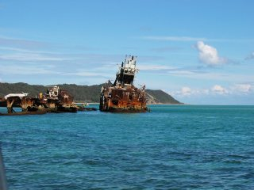 Weer een uitstekende dag, met vandaag een lunch Tangalooma, een plaatsje waarvandaan vroeger aan walvisvaart werd gedaan, maar wat nu is omgetoverd tot een toeristen resort. Als duikattractie en als golfbrekers voor de overige boten hebben ze hier vlak voor de kust een aantal oude walvisvaarders tot zinken gebracht. Ze liggen er al even en het uitzichts heeft iets dreigends.Op de terugweg liepen we midden in de baai vast op een kleine zandbank. Uitstappen en duwen hielp ons gelukkig weer snel op weg. |
30 Juli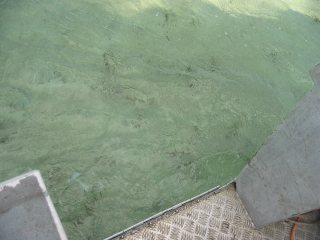 Het meten vandaag ging erg goed totdat we rond lunchtijd tijdens laag water vastliepen op een grote zandbank in "Blue Hole". Op de foto zijn de zandbank en de zijkant van de boot te zien. Na een lunchpauze van zo'n twee uur konden we voorzichtig een uitweg zoeken, maar omdat het al laat was moesten we weer terug varen. Niet een bijzonder vruchtbare dag dus. Wel een boel grote schildpadden gezien, die onder water ongelooflijk snel zijn. |
29 Juli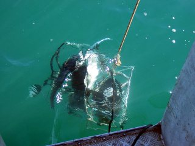 Nog een dag met perfecte condities voor het meten. Op de foto is het frame met de AC9, en instrument dat absorbtie en scattering meet en de HydroScat die alleen scattering meet. |
28 Juli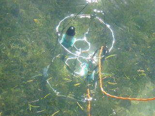 De wind en de golven zijn gaan liggen en het water was vlak als een spiegel. Ideaal voor satelliet beelden als er niet door idioten aan "skywriting" werd gedaan: het schrijven van berichten in de lucht met een vliegtuig. Meestal berichten als "I love you"... Heel nuttig.Op de foto een van onze frames met sensoren vlak onder het oppervlak. De Ramses sensoren meten spectra van inkomend en door de waterkolom en bodem gereflecteerd licht. |
27 Juli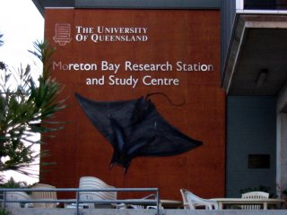 Gedurende het veldwerk verblijven we in het Moreton Bay Research Station in Dunwich op North Stradbroke Island, waarvandaan veel onderzoek in de omgeving wordt verricht. Ons onderzoek doen we samen met de Universiteit van Queensland.De eerste velddag vandaag en meteen een aardige kennismaking met de golven. Een boot van een meter of acht in combinatie met golven van een meter is niet echt stabiel als die voor anker ligt. Dit was de eerste keer dat ik echt zeeziek ben geweest. Na de lunchpauze aan land gebracht en maar even pillen gehaald om dat voortaan te voorkomen. |
26 Juli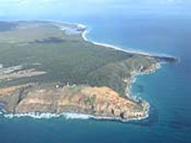 Na een heel vroeg (6.00 A.M.) ontbijt naar het werk gegaan en daar om 7.30 met een taxibus vol apparatuur vertrokken naar het vliegveld om naar het warme Brisbane te vliegen. We (twee collegas en ik) gaan daar de komende tien dagen veldwerk doen vanaf een boot in Moreton Bay. We sluiten ons daar aan bij een grote groep onderzoekers om zoveel mogelijk data te verzamelen in een relatief korte periode, waarbij ook een aantal beelden (satelliet en vliegtuig) genomen zullen worden.We zullen verblijven in een onderzoeksstation op North Stradbroke Island (Straddie voor de locals). Waarschijnlijk geen updates vanuit daar, maar na vier augustus natuurlijk een boel fotos. Hopelijk wat mooier dan deze, die ik even van het internet geplukt heb. |
25 Juli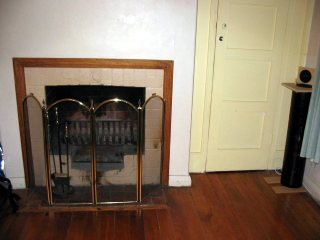 Vandaag dan eindelijk naar de echt definitieve kamer verhuisd (een deur verderop in de gang). Mijn kamer heeft een eigen openhaard en na een middag schuiven met spullen ziet het er al heel aardig uit. Binnenkort even wat posters printen en dan wordt het haast echt mooi. Meteen trouwens de rugzak alweer ingepakt voor de volgende tien dagen. |
24 Juli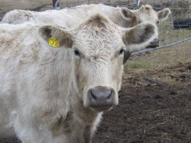 Doordeweeks schijnt de zon steeds, maar de laatste weekends heb ik niet echt geluk. Weer 7.5 mm vandaag, dus niet echt gelegenheid gehad om wat te doen.Wel moest ik even de hekken langslopen omdat het schrikdraad niet meer werkte. Er bleek ergens bij de koeien een stuk ijzerdraad overheen te zijn gevallen... |
18 Juli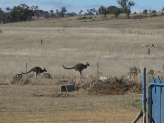 Hier dan een paar kangaroes in actie, net voordat ze over het tuinhek springen. Ik begrijp dat de kangaroes rond het meer met drinkwater voor Canberra zelfs het Nederlandse nieuws gehaald hebben. Er zijn er zoveel dat een paar honderd meer of minder ook niet uitmaakt lijkt me.Volgens het weerbericht op de radio regent en sneeuwt het, maar ik heb de hele middag in de zon (uit de harde wind) op het terras gezeten. De ultieme zondag met niks doen / lezen in de zon, wat houthakken en wat muziek luisteren. Helaas is het weekend alweer bijna over... |
17 Juli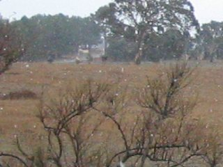 De eerste dag vandaag die ik (in bijna vier maanden al) meemaak met maar iets van 20 minuten zonneschijn. De rest van de dag was miserable met zelfs iets wat hier heel erg zeldzaam is: sneeuw! Waar tussen de buien door soms even een paar minuten de zon scheen was die zo krachtig dat meteen het meeste net gevallen water weer verdampt. Dit is een van de redenen waarom het hier zo droog is. Totale neerslag volgens de meter: 7.5 mm.Door het beroerde weer was er eigenlijk niks anders te doen dan nog maar een dag aan het report werken. Helaas was het zelfs met de kachel de hele dag aan niet warm te krijgen vandaag. Gelukkig schijnt de zon normaal gesproken altijd. |
16 Juli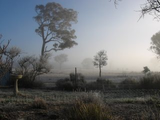 Omdat ik nu zo'n fantastisch huis tot mijn beschikking heb en een boel artikelen moest lezen en een begin maken aan mijn report, ben ik vandaag maar aan het 'thuiswerken' gegaan.Na een bijzonder koude nacht (-7) zag het er vanochtend adembenemend uit. Met al deze rust, het uitzicht en mijn eigen muziek is het nog een produktieve dag geworden ook. |
11 Juli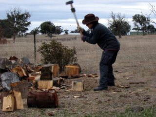 Uit de donkere wolken op de foto van gisteren is maar liefst 3.5 mm regen gevallen. Het klonk als heel wat meer gisteravond.Omdat de verwarming hier gebeurt met een houtkachel moet er ook gehakt worden en dat is wat ik vandaag onder andere gedaan heb. Het werkt dubbelop: warm tijdens het hakken, en warm in de kachel in de avond. |
10 Juli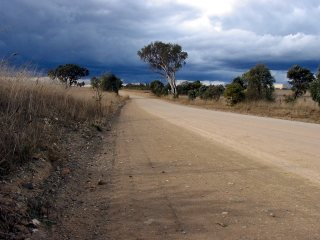 Na een fantastische nacht slaap eerst maar even alle hekken gecontroleerd, want die schijnen nog wel eens schade op te lopen door onvoorzichtige kangaroes, waarvan er honderden (niet overdreven) rondhoppen.Daarna besloten om lopend een kijkje te gaan nemen in het dorp. Het huis ligt overigens aan een doodlopende zijstraat van deze gravelroad (geen asfalt dus). Gelukkig kwam er maar om het kwartier ofzo een auto langs, want de stofwolken die auto's op dit soort wegen produceren zijn niet echt fijn om in te lopen. Na twee uur lopen bleek er maar liefst een tankstation / beperkte supermarkt en een slager te zijn. Op de energie van een magnum maar weer terug gelopen en de rest van de middag en avond de weblog maar eens even een kleine facelift gegeven, want de voeten deden nogal zeer. Het 360 graden panorama bovenaan de pagina geeft een idee van het uitzicht en de uitgestrektheid hier. |
9 Juli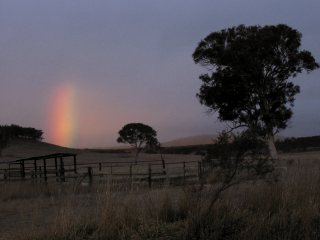 Voor de verandering maar een keer vroeg van het werk vertrokken en in de auto richting mijn weekend huis gereden. Vlak na aankomst werd ik al meteen getrakteerd op deze schitterende regen'boog'. Het is wel niet echt een boog, maar geen idee hoe je dat anders moet noemen.Echt ongelooflijk hoe donker (het maakt niet uit of je ogen open of dicht zijn) en stil het hier 's nachts is. Een andere interessante eigenschap van dit huis is dat het zgn 'solar-passive' gebouwd is. Dat betekent dat het in de winter door de zon die dan naar binnen schijnt opgewarmd wordt. Het werkt opmerkelijk goed, en om 8.30 A.M. is het al aangenaam binnen zonder dat er een verwarming aan te pas komt. |
4 Juli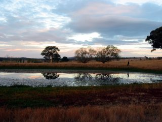 Vanaf volgende week ga ik op de "hobbyfarm" van de baas passen. Vandaag uitleg gekregen over van alles en nog wat en dit is dus een van de uitzichten. |
3 Juli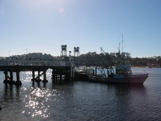 Een dagje naar de kust met de Franse vrienden. Het water was te koud om te zwemmen, maar een graad of 20 (lucht) midden in de winter is niet slecht. Een heel contrast met de 12 in Canberra.Hier zie je dus af en toe zelfs wat dolfijnen uit het water springen. Geen walvissen gezien helaas, maar wie weet komt dat nog. |